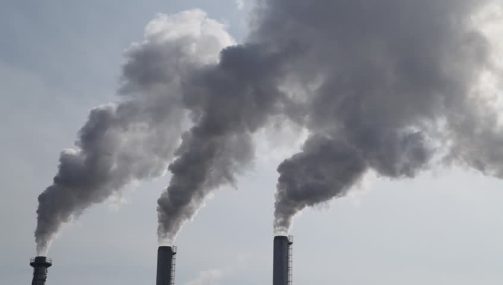

From the 1990s, the emissions of carbon dioxide
has increased from around 5300 million metric tons
to a maximum of 6300 at around 2007. From 2008 onward,
the amount of carbon dioxide emissions has dropped
to around 5500 million metric tons as environmental
policy and regulations began to be put in effect.
When looking at greenhouse gases, carbon dioxide represents most
of the emissions. Carbon dioxide is mainly emitted from the need for energy like in industrial processes.
In addition to carbon dioxide, greenhouse gases include methane and nitrous oxide which
further compund the issues that arises like global warming.
States have a different carbon footprint based on factors like population,
environmental policy, and types of industries. For example, Texas
has the highest amount of carbon emissions beause of their energy industry.
Densely populated states generally have more emissions. Some states have adopted environmentally
friendly policies to lower their emissions.
The leading reason for carbon emissions comes from fossil fuel combustion
which is used in many different areas. The leader in carbon emissions would be
transportation as vehicles rely on fossil fuels and is used by almost everyone.
Electricity is also very important while industrial, residential, and commercial
do not have the same carbon emissions as less fossil fuels are needed in those areas.
From the 1880s to the 1940s, there was an era of global cooling as
the change in temperature decreased from year to year. From the 1940s, we
began to see the rise in temperature which could be a result of booming industry.
In the 2000s, we can see temperature has risen by 1° C.
As emissions and temperatures rised throughout the 2000s, many began to
discuss the long-term ramifications of increased carbon emissions. The focus on efficiency
was one reason for increased presence of electric vehicles as supposed to vehicles using oil. Electric vehicles have risen
substantially from 2011 to 2019 as sectors like transportation look for more efficiency.
We could see that since the 1990s, the amount of emissions has increased with the majority being carbon dioxide emissions. In each state of the U.S, the amount of emissions varied based on several different factors like population or its energy sector. Some states like Texas have far more emissions than a state like Maryland. We could also see that some areas like transportation have far more emissions than the residental area.
